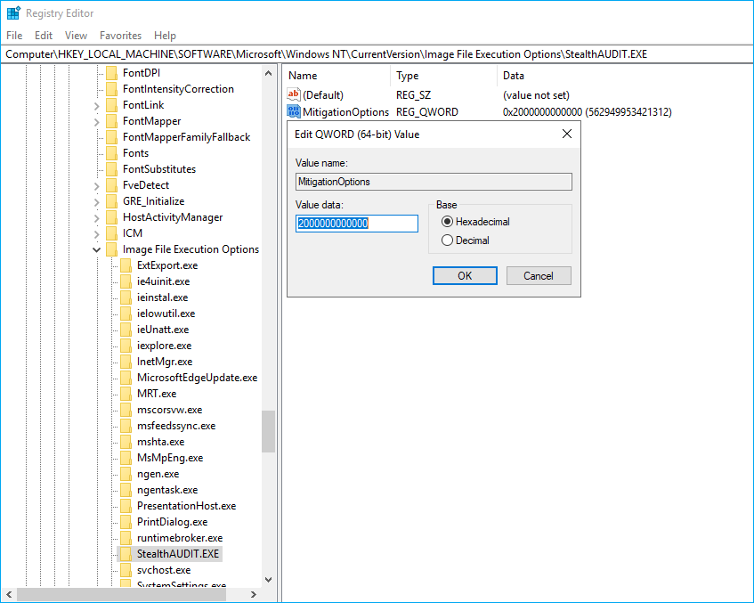

Symptom
Icons are missing in StealthAUDIT Web Console.
Causes
-
Local browser extensions are conflicting with StealthAUDIT Web Console and are blocking the console elements.
-
A GPO to block untrusted fonts is enforced.
Resolutions
-
Review the browser extensions blocking web fonts or JavaScript to disable them.
-
Exclude StealthAUDIT from the GPO blocking untrusted fonts:
-
In the StealthAUDIT server, open Registry Editor, and follow the key provided below:
Computer\HKEY_LOCAL_MACHINE\SOFTWARE\Microsoft\Windows NT\CurrentVersion\Image File Execution Options -
Right-click the Image File Execution Options node and select New > Key. Name the new key StealthAUDIT.EXE.
-
Right-click the StealthAUDIT.EXE key and select New > QWORD (64-bit). Name the new value MitigationOptions.
-
Right-click the MitigationOptions value and select Modify. Verify the Value data field states Hexadecimal 2000000000000. Click OK to save changes.

-